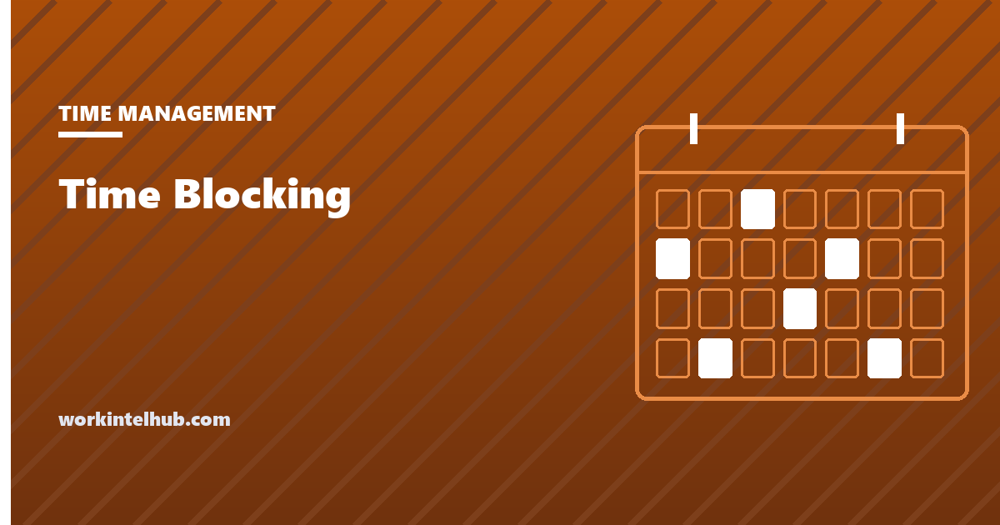

Time Blocking

Time blocking is the practice of dividing the working day into blocks, each assigned in advance to a specific piece of work, so that the calendar rather than a to-do list decides what happens next.
It is the most recommended time management method on the internet and one of the most abandoned, usually within a fortnight, because most guides describe the ideal blocked day and not the day that actually arrives. This page covers both, with a planner you can use now and the failure modes to design around before you start.
Block out today
Blocks are laid end to end from the start time with the buffer between them. The plan is saved in this browser only. Drag is deliberately absent: reorder by deleting and re-adding, which is faster than it sounds and stops the plan becoming a toy.
How to block a day that survives
- Start from fixed commitments, not from tasks. Meetings, school runs and deadlines go in first. What is left is the time you actually have, and it is always less than the day.
- Put the one important piece of work in the first free block. Ninety minutes if you can get it, sixty if not. Everything after lunch is worse for this kind of work, for most people, on most days.
- Block the reactive work rather than pretending it will not happen. A 30-minute email block at 11:30 and another at 16:00 is a plan. "No email until noon" is a hope. Newport's phrase for this is that "periods of open-ended reactivity can be blocked off like any other type of obligation".
- Leave buffers. Ten minutes between blocks absorbs the overrun that otherwise cascades through the afternoon. The planner above adds them automatically.
- Plan to re-plan. When the day breaks, and it will, redraw the rest of it in two minutes rather than abandoning the method. The value is in the decision about what to do next, not in the original drawing.
The case for the method in one sentence is Cal Newport's, from 2013: "A 40 hour time-blocked work week, I estimate, produces the same amount of output as a 60+ hour work week pursued without structure." It is an estimate, and he says so; the mechanism behind it is that unblocked time defaults to whatever is loudest, which is rarely what matters.
The variants, and which one you need
| Variant | What changes | Best for |
|---|---|---|
| Time blocking | Each block has a named task | Individual contributors with control over their day |
| Task batching | Similar small tasks share one block | Anyone drowning in email, approvals and admin |
| Day theming | Each day has a type of work | Managers and founders switching between very different roles |
| Timeboxing | The block has a hard stop and the work fits it | Work that expands to fill time; see Parkinson's law |
These are not competing systems. A themed week contains blocked days, a blocked day contains batched blocks, and any block can be boxed. Start with plain blocking and add the others when a specific problem shows up: batching when interruptions fragment the day, theming when Monday and Thursday need different brains, boxing when tasks never finish, and a pomodoro timer inside a block when starting is the problem.
Where time blocking fails
Reactive roles. Support, operations and anyone whose job is responding cannot block eight hours, and should not try. Two protected 45-minute blocks a day, with the rest explicitly reactive, is the version that works. If even that is impossible, the problem is staffing, and our capacity planning guide is the page you need rather than this one.
Over-precision. A plan in 15-minute increments breaks at the first interruption and takes the method's credibility with it. Blocks of 45 to 90 minutes with buffers are robust; smaller units belong inside a block, not on the calendar.
Planning as procrastination. Some people discover that drawing the perfect day is more pleasant than living it. The planner above has no colours and no drag-and-drop on purpose. If planning takes more than five minutes, it has become the task.
Calendars other people can see. A blocked calendar invites colleagues to book over the blocks, because an empty slot looks like availability. Mark deep-work blocks as busy and name them. Our guide to focus blocks in a busy calendar covers the negotiation that goes with it.
Time blocking for teams
The method scales in one specific way: shared no-meeting windows. A team that agrees mornings are meeting-free until 11:00 has given everyone a daily block without anyone having to defend one. The cost is that meetings compress into the afternoon, which is a reasonable price. The wider set of methods this sits inside is in our guide to time management techniques for focused work, and the state a good block is trying to reach is described in the deep work entry.
Key takeaways
- Time blocking assigns each part of the day to a named piece of work in advance, so the calendar decides what happens next.
- Fixed commitments go in first, the most important work takes the first free block, and reactive work gets its own blocks rather than being wished away.
- Buffers of ten minutes between blocks stop overruns cascading. Blocks of 45 to 90 minutes survive interruptions; 15-minute plans do not.
- Task batching, day theming and timeboxing are additions for specific problems, not alternatives.
- Reactive roles should protect two blocks a day and declare the rest reactive. If that is impossible, the problem is capacity.
- Redraw the rest of the day when it breaks. The value is in the next decision, not the original plan.
Frequently asked questions
What is time blocking?
A method of planning the day by dividing it into blocks of time, each assigned in advance to a specific task or type of work. Instead of working from a to-do list, you work from the calendar, which decides what you do and when.
How long should a time block be?
Between 45 and 90 minutes for focused work, with a buffer of about ten minutes between blocks. Shorter blocks break at the first interruption; longer ones tend to be abandoned part way through. Reactive blocks for email and messages can be 30 minutes.
What is the difference between time blocking and timeboxing?
Time blocking reserves a period for a task. Timeboxing adds a hard stop: the work has to fit the box and you stop when it ends, finished or not. Timeboxing is the tool for work that expands to fill the time available.
Does time blocking work for people with lots of meetings?
Yes, if the meetings go in first and the blocks are drawn around them. The usual failure is drawing an ideal day and then finding no room for it. Two protected blocks in a meeting-heavy day are worth more than eight blocks that never happen.
What should I do when the plan breaks?
Redraw the rest of the day in a couple of minutes. The method's value is in deciding what to do next rather than in the original plan surviving intact. Abandoning it for the day because one block slipped is the most common reason people stop.
Is time blocking the same as the Pomodoro technique?
No. Pomodoro divides work into fixed 25-minute intervals with breaks. Time blocking assigns larger periods to specific tasks. Many people use pomodoros inside a time block for work they find hard to start.